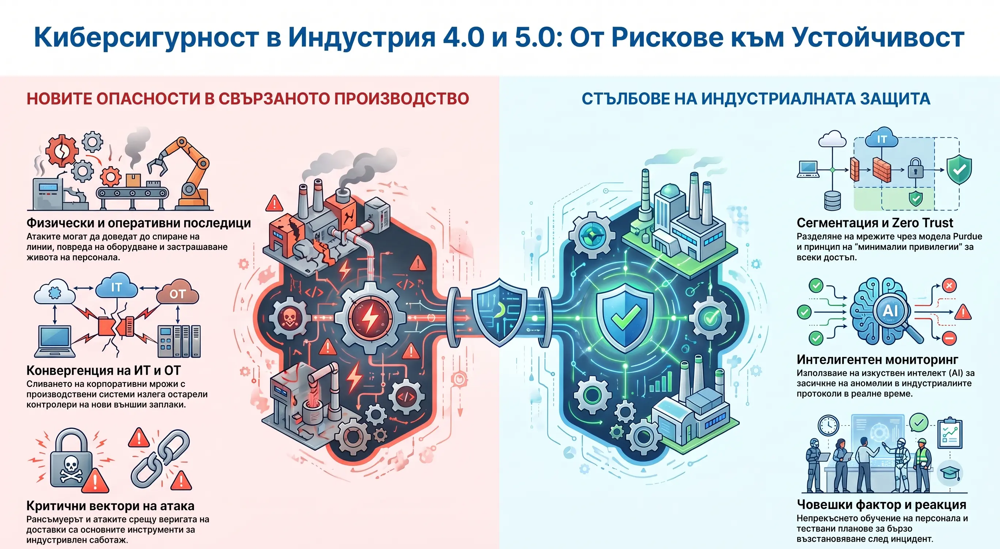

NIS2 · Производство · IT/OT
NIS2 за производствени компании: обхват и управление на OT риска
Не всяко предприятие, което се нарича производител, автоматично попада под NIS2. Проверете конкретната производствена дейност в приложение II, размера и специалните критерии; ако субектът е в обхвата, оценете и как киберинцидент в IT или OT може да засегне услугите, хората и непрекъснатостта.

⚠️ Важна бележка: Тази публикация е с информационна и образователна цел и не представлява юридическо или правно тълкуване на приложимото законодателство. Обстоятелствата варират, а нормативните изисквания се променят. При конкретен казус се консултирайте с квалифициран юрист.
Кратък отговор: приложение II, сектор 5 на Директива (ЕС) 2022/2555 изброява определени производствени дейности. Дали конкретно дружество попада под NIS2 зависи от точната дейност, юридическото лице, размера и приложимите изключения или специални основания. OT рискът трябва да се управлява по начин, който отчита безопасността и наличността на физическите процеси.
Кои производствени дейности са посочени в приложение II?
Сектор 5 „Производство“ в приложение II включва посочени категории дейности, сред които производство на медицински изделия и изделия за инвитро диагностика; компютърна, електронна и оптична продукция; електрическо оборудване; машини и оборудване, некласифицирани другаде; моторни превозни средства, ремаркета и полуремаркета; и друго транспортно оборудване.
Това не означава, че всяка фабрика или всеки производител автоматично попада в обхвата. Проверете официалната секторна дефиниция, конкретната дейност на юридическото лице, размера и специалните критерии по членове 2 и 3, както и действащите български мерки. Смесени групи и организации с няколко дейности може да изискват отделен анализ за всяко юридическо лице.
Какви въпроси да зададе производителят?
- Кое юридическо лице произвежда продукта или предоставя услугата и как е описана реалната дейност?
- Кои линии, обекти, услуги и системи са включени в обхвата и кои са зависимостите между тях?
- Къде се свързват корпоративната IT среда и производствената OT среда?
- Кои външни доставчици, интегратори и техници имат дистанционен или привилегирован достъп?
- Какво би станало с производството, безопасността, околната среда, качеството или клиентските доставки при прекъсване?
- Кои инциденти могат да бъдат значими по приложимия режим и кой задейства националната процедура за уведомяване?
NIS2 и OT: рискът не е само поверителност на данните
При производствени системи киберрискът може да се прояви като загуба на видимост, прекъсване на процес, неправилна команда, забавено възстановяване или компрометиране на инженерни и поддържащи системи. Това налага оценката да отчита наличност, надеждност и безопасност заедно с поверителността и целостта на информацията.
NIST SP 800-82 Rev. 3 е общо техническо ръководство за сигурност на OT, което изрично отчита уникалните изисквания за производителност, надеждност и безопасност на такива среди. То е полезен технически източник, но не е само по себе си NIS2 правно изискване или заместител на българското законодателство.
Как да свържете риска с мерките по NIS2?
Ако организацията е в приложимия обхват, направете връзка между риск-сценариите и тематичните области за мерки по член 21. За OT среди практическите примери могат да включват следното — като риск-базирани технически подходи, а не фиксиран задължителен продуктов списък:
- Активи и зони: поддържайте инвентар на PLC, HMI, инженерни станции, мрежово оборудване, версии, собственици и зависимости.
- Разделяне на комуникациите: определете и контролирайте разрешените потоци между корпоративната IT среда, индустриалния DMZ и OT зоните; избягвайте ненужна директна свързаност.
- Достъп на доставчици: използвайте индивидуални акаунти, ограничен обхват, многофакторна автентикация, одобрение и временно предоставяне на достъп, когато е приложимо.
- Уязвимости и промени: съгласувайте сканирането, пачването и промените с производствените собственици; тествайте предварително и използвайте компенсиращи контроли, когато промяна не може да се приложи безопасно.
- Наблюдение и реакция: определете наличните OT сигнали, праговете за ескалация и ролите на операторите, IT/security и ръководството.
- Непрекъснатост и възстановяване: защитавайте инженерни конфигурации и резервни копия, проверявайте възстановяването и упражнявайте реакции, съобразени с безопасността на процеса.
Стъпки за първоначална gap проверка
- Потвърдете приложимостта на NIS2 към юридическото лице и конкретната производствена дейност.
- Изберете критични услуги и сценарии, които могат да прекъснат производство или да засегнат безопасността.
- Картографирайте IT/OT активите, зоните, връзките и доставчиците с достъп.
- Свържете всеки сценарий с приложимите теми по член 21 и наличните доказателства.
- Документирайте пропуск, риск, компенсираща мярка, собственик, срок и начин за повторна проверка.
- Сверете incident reporting канала и времевите процедури с действащите национални правила.
Какво не бива да се предполага?
- че думата „производство“ в описанието на фирмата сама доказва приложимостта;
- че всички производствени предприятия имат еднакви NIS2 задължения;
- че стандартен IT антивирус, скенер или документ автоматично е подходящ за OT среда;
- че за целите на безопасността може да се прекъсне производствена система без анализ и одобрение;
- че самооценка или чеклист е официално решение за приложимост или съответствие.